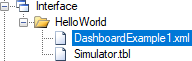

Dashboard Plugin displays useful widgets on dashboards: charts, current data and arbitrary frames, for example, CCTV camera stream. Settings of each dashboard allow to specify column count and widget aspect ratio.
First you need to perform the general sequence of installing plugins, and then perform several additional actions:
Configuration of each dashboard is stored in a separate XML file. The dashboard example, DashboardExample1.xml, is included in the plugin installation package. Dashboard files can be located in the interface directory, or in the Webstation storage directory. The 1st option is preferred.
In order to display the dashboard links in the explorer tree of Webstation, perform the following settings in the project:

The @DashboardView path suffix indicates the type of view. The access rights to dashboards are configured using the Rights table of the configuration databse. It is similar to editing the rights to table views and schemes.
In addition, dashboard files can be located in the storage directory of Webstation. In this case, click the Dashboards item of the Webstation main menu to display the list of available dashboards. Examples of the dashboard locations in the storage:
ScadaWeb\storage\allusers\Dashboard\ - dashboards available to all users;
ScadaWeb\storage\myuser\Dashboard\ - dashboards available to MyUser.
Consider the contents of a dashboard configuration file:
<?xml version="1.0" encoding="utf-8" ?>
<DashboardConfig>
<DashboardOptions>
<Name>Dashboard Example 1</Name>
<ColumnCount>2</ColumnCount>
<AspectRatio>1.33</AspectRatio>
</DashboardOptions>
<Widgets>
<Widget type="Chart" cnlNums="101,102" viewIDs="2,2" period="2" />
<Widget type="Chart" cnlNums="101,103" viewIDs="2,2" mode="fixed" period="2" title="Sample Chart" config="PlgChartPro.xml" />
<Widget type="CurData" cnlNums="101,102,103,104,105,106,107,115" viewIDs="2,2,2,2,2,2,2,2" title="Sample Data" />
<Widget type="View" viewID="2" />
<Widget type="CustomUrl" url="https://www.youtube.com/embed/EEIk7gwjgIM" />
</Widgets>
</DashboardConfig>
The DashboardOptions section contains common dashboard parameters:
Name - dashboard name,
ColumnCount - number of columns from 1 to 4 (widgets are shown in a single column anyway on small screens of mobiles),
AspectRatio - ratio of widget width to its height.
The Widgets section contains a list of widgets that are displayed on a dashboard. Number of widgets is arbitrary. However, too many widgets on the same dashboard can reduce the performance of the web application.
Widgets of the following types are supported:
Chart - a chart of the specified input channels,
CurData - a table contains current data of the specified input channels,
View - a view having the specified ID,
CustomUrl - custom web page.
Configuration of widgets of the Chart and CurData types must define input channel numbers and also identifiers of the views that include these input channels. View IDs are required for user access rights validation.